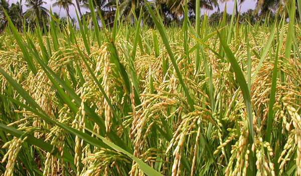

আমন ধান খরিপ-২ মৌসুমের ধান
১. রোপন সময়:-
* রোপা আমনের আলোক-অসংবেদনশীল দীর্ঘ
ও মধ্যম মেয়াদি জাতগুলোর উপযুক্ত
রোগনা হচ্ছে ১৫ জুলাই-১৫ আগস্ট ।
* আলোক-অসংবেদনশীল স্বল্প মেয়াদি
জাতগুলোর উপযুক্ত রোপন সময় হচ্ছে
২৫ জুলাই-২৫ আগস্ট।
* আলোক-সংবেদনশীল জাতগুলোর
(বিআর২২, বিআর২৩, ব্রি ধান৪৬)
সরাসরি বপন সময় হলো ৩০ আগস্ট পর্যন্ত
এবং রোপন সময় হচ্ছে ১৫ সেপ্টেম্বর পর্যন্ত।
২. চারার বয়স:-
* আলোক-অসংবেদনশীল দীর্ঘ ও মধ্যম মেয়াদি
জাতগুলোর চারার বয়স হবে ২৫-৩০ দিন।
* আলোক-অসংবেদনশীল স্বল্পমেয়াদি জাত
গুলোর চারার বয়স হবে ১৫-২০ দিন।
* লবণাক্ততা সহিষ্ণু জাত (যেমনঃ ব্রি ধান৪০,
ব্রি ধান৪১, ব্রি ধান৫৩,ব্রি ধান৫৪, ব্রি ধান৭৩)
গুলোর চারার বয়স হবে ৩০-৩৫ দিন।
* আলোক-সংবেদনশীল জাত (যেমনঃ বিআর২২,
বিআর২৩, ব্রি ধান৪৬, ব্রি ধান৭৬, ব্রি ধান৭৭)
গুলোর নাবীতে রোপনের ক্ষেত্রে চারা বয়স হবে
৩৫-৪০ দিন।